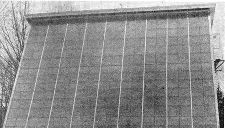

Well, gang the solar energy battle is being won. How do I know? Because it ain't just freaks working on sun-powered collectors and heat exchangers anymore. Real, respectable, established corporations-large and small-are jumping on the bandwagon these days and that's good to know.
One of those bandwagon jumpers is the Kai-Lite Division of the Kalwall Corporation and it's nice to see that instead of duplicating what someone else had already done-Kal-Lite seems to have brought an improvement to solar collector design.
What the folks at Kai-Lite have done, see, is build an ordinary flat plate collector. Instead of using glass for the cover, though, Kai-Lite designers have used Sun-Lite a special, "ice clear", shatter-resistant, fiberglass-reinforced sheet made by you guessed it Kal-Lite. The advantages? Sun-Lite allows approximately 5% more solar energy to enter the collector than a comparable pane of glass will admit. And, once that energy is inside, the fiberglass-reinforced sheet (which is a better insulator) traps and holds up to 50% more heat than glass panels can retain.
The Kal-Lite people also claim that their own special fiberglass/aluminum bonding system developed over 21 years ago and used continuously since assures a super snug seal all around the collector's cover. This "clamp-tite" glazing system, according to a Kai Lite press release, also makes it possible for the company to prefab individual flat plate covers or tops for whole arrays of collectors with the guarantee that the finished assemblies will be waterproof when erected on site.
Fiberglass, of course (even though it's not mentioned by Kai-Lite), does tend to "age" faster in sunlight than does glass a fact which must always be kept in mind when making any long-term comparisons between collectors topped with Sun-Lite and flat plate units covered with glass. Still, Sun-Lite's advantages might well outweigh this disadvantage in applications where maximum heat gain over, say, a five year period of time, is more important than a somewhat lessened
energy conversion over, say, a 20 year period. Or in high risk areas where fiberglass' greater shatter resistance is needed to protect a collector and make it work at all.
Whatever, it's good to see some of the "bigger guys" finally putting dollars and creative efforts into attempts to improve the rather elderly flat-plate collector. We're all for seeing some test installations of solar collectors topped by Sun-Lite and, if you're interested in giving the new reinforced sheets a test, you can get more information and literature from the Kai- Lite Division of the Kalwall Corporation, 1111 Candia Road, Manchester, New Hampshire 03103.
|
 |
|
|